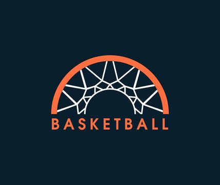

Stats Baskets
Développement d'une application mobile conçus pour les fans de basket qui permet de suivre les scores des matchs ainsis que les statistiques des joueurs.
Projet personnel réaliser seul
Utilisations de Firebase pour les notifications push et de Postgresql pour la base de données.
Projet limiter du fait du nombre de requête disponible gratuitement.
Quelques chiffres
.png)
.svg)
API's
 Rails
Rails
 React Native
React Native
 FireBase
FireBase
 Postgresql
RapideApi • Api-NBA
Postgresql
RapideApi • Api-NBA
Développement à partir d'api complexe et complète afin de mettre en avant les scores des équipes et les statistique de la partie.
Des données complexe pour chaque joueur afin de suivre leur performance
J'utilise l'api afin de récupérer les statistique des matchs chaque heure afin de garder à jour le suivis des partie quasiment en temps réel
avec une notifications quand le match est fini
Practice
Rails
React Native
FireBase
Postgresql
Les données des matchs sont récupérer chaque heure afin de garder à jour le suivis des matchs en cours
Les Statistique des joueurs sont détailler et disponible à chaque fin de matchs avec plus de 12 stats détailler et différentes
Des notifications push sur téléphone à chaque fin de match afin d'être tenu au courants.
En cours de recherche afin d'optimiser le nombre de requête limiter afin de rajouter un système de tracker de joueur favorie.